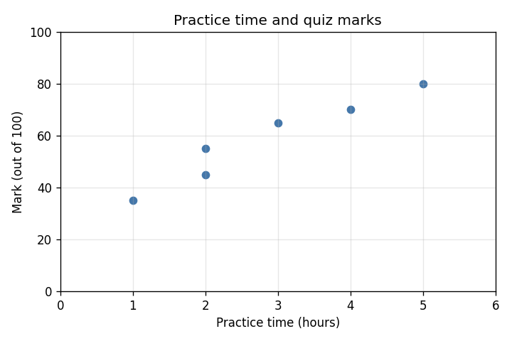

A column of numbers can hide a useful pattern. A plot places values on visual scales so you can compare them. Matplotlib helps you draw that picture, explain its measurements and save it for a report. The first choice is what relationship you want the reader to see.
A line suits change across ordered weeks. Bars compare separate categories such as food and travel. A scatter plot shows paired measurements, such as practice hours and quiz marks. These choices carry meaning: connecting unrelated students with a line would suggest a sequence the data does not provide.
Install the package with python -m pip install matplotlib in the environment you use for Python. The scripts here save PNG files rather than opening windows. That lets the same calculation run on a laptop or a server without depending on an interactive display.
Import matplotlib.pyplot as plt. Calling plt.subplots() returns a Figure and an Axes. The Figure is the complete canvas. The Axes is one plotting region, with its own data and labels. The plural-looking class name Axes still refers to a single region.
fig, ax = plt.subplots(figsize=(6, 4))
ax.plot(weeks, hours, marker="o")
ax.set(xlabel="Week", ylabel="Hours", title="Weekly practice time")
fig.tight_layout()
plt.savefig("plot.png", dpi=120)
plt.close(fig)Keep the ax name and call its methods to make the destination clear. ax.plot draws a line, ax.bar draws bars, and ax.scatter draws separate points. The x and y sequences must contain matching numbers of observations. Preserve pairs whenever you sort or filter data.
figsize gives width and height in inches. dpi gives pixels per inch for raster saving. A six-by-four-inch canvas saved at 120 dpi becomes 720 by 480 pixels. More pixels may improve an image's appearance at a larger display size, but they cannot repair a confusing choice of scales.
A plotting call places data inside the Axes. For the weekly example, x positions one through four identify weeks. Heights two, three, five and four identify hours. The line connects these points in the order supplied, so sort a time sequence before drawing it.
The visible horizontal and vertical directions are axes. Each axis has a scale and tick marks. Tick labels show particular coordinates, while an axis label explains what those coordinates measure. A title names the overall subject. Without units, a value of 120 could mean minutes, marks or taka.
A legend identifies different data series. Pass a label to a plotted series, then call ax.legend(). One clearly titled bar series may need no legend. Extra visual elements should earn their space by explaining something the reader could otherwise misunderstand.
A light grid can help the eye compare heights with tick values. Keep it quieter than the observations. Markers help when a line contains few points or only one point. A single observation without a marker may produce no visible line segment.
If you know C
Think of the Figure as a resource owned by a plotting session. Matplotlib manages memory through Python, but pyplot keeps references to open figures. Close each finished figure in repeated processing so unused canvases do not accumulate.
Weekly practice hours rise from two to five before finishing at four. The x positions are numeric weeks, in increasing order.
Bars compare category totals in BDT. Their shared zero baseline makes heights proportional to the amounts.

Each point represents one anonymous student. The association is visible, but this small observational example does not establish causation.

The weekly line rises through week three and falls in week four. It shows the order of those observations. The connecting segments help you follow change, but they do not establish the exact hours at an unmeasured half-week. Avoid presenting interpolation as a recorded fact.
The expense bars start at zero, so their lengths represent the actual amounts. Books cost more than food in this invented record. Starting the vertical scale near the smallest value would exaggerate the difference in bar lengths. A line plot can sometimes use a narrower range, but its scale still needs clear labeling.
The scatter plot includes two students at two hours, with different marks. Keep both points because equal x values do not mean duplicate records. With larger datasets, overlapping points may need transparency or a different summary. Do not silently remove valid observations merely to make a picture look tidy.
A pattern between hours and marks is an association. It does not prove extra practice caused the mark difference. Prior knowledge, attendance and other factors may matter. Describe what the observed points show, and separate that description from any explanation requiring stronger evidence.
Call savefig with a filename ending in the intended format, such as plot.png. A relative path writes into the process's current working folder. Choose an explicit project path in a larger application so you can find the report later. Confirm successful completion only after saving returns.
The examples select the Agg backend before importing pyplot. A backend is the part of Matplotlib that renders a figure or presents it in a window. Agg can produce image files without a graphical display. An interactive notebook may choose its own backend, so follow that environment's display workflow when exploring.
tight_layout adjusts common spacing problems around labels. It cannot guarantee every long title or crowded category label will fit. Open the resulting image and check it at the size your reader will use. Shorten labels, enlarge the canvas or rotate ticks deliberately when needed.
Close the Figure after saving. Calling savefig after an interactive show has closed the active figure can save an unexpected empty canvas. Keeping a Figure reference and using fig.savefig in a larger program makes ownership even clearer. The examples keep one active Figure at a time.
This destroys which hour value belongs to which mark. Sort complete paired records together, then extract x and y from that same ordering.
Write Amount (BDT), Hours or another meaningful unit. The reader should understand a saved image without seeing the program that created it.
Later plotting calls may land on an earlier Figure. Create a fresh Figure for each independent report and close it after saving. Inspect the produced file before sharing it.
These examples use Matplotlib APIs available in the tested 3.10 release; bar_label requires Matplotlib 3.4 or later. Supported Python versions depend on the installed release. Fonts and rendering details can differ across systems, so the text confirmation is stable while image bytes are not promised to match everywhere.
A useful chart pairs the right geometry with honest scales, readable labels and a saved image you have inspected. Use the next lesson, problem solving with Python, to practice choosing representations and checking results across a wider set of tasks.